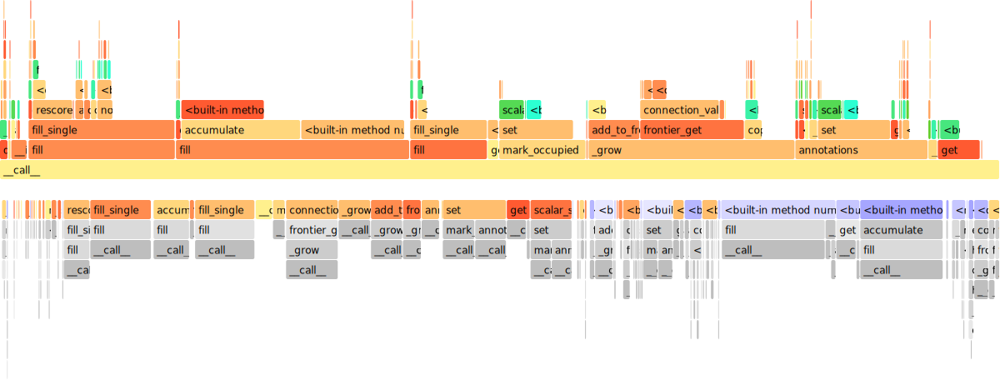

Sven Kreiss, 2020
Profile¶
Profile Decoder¶
!python -m openpifpaf.predict coco/000000081988.jpg --no-download-progress --debug --profile-decoder
DEBUG:__main__:neural network device: cpu
/opt/hostedtoolcache/Python/3.7.9/x64/lib/python3.7/site-packages/torch/serialization.py:649: SourceChangeWarning: source code of class 'openpifpaf.network.nets.Shell' has changed. you can retrieve the original source code by accessing the object's source attribute or set `torch.nn.Module.dump_patches = True` and use the patch tool to revert the changes.
warnings.warn(msg, SourceChangeWarning)
/opt/hostedtoolcache/Python/3.7.9/x64/lib/python3.7/site-packages/torch/serialization.py:649: SourceChangeWarning: source code of class 'torch.nn.modules.container.Sequential' has changed. you can retrieve the original source code by accessing the object's source attribute or set `torch.nn.Module.dump_patches = True` and use the patch tool to revert the changes.
warnings.warn(msg, SourceChangeWarning)
/opt/hostedtoolcache/Python/3.7.9/x64/lib/python3.7/site-packages/torch/serialization.py:649: SourceChangeWarning: source code of class 'torch.nn.modules.conv.Conv2d' has changed. you can retrieve the original source code by accessing the object's source attribute or set `torch.nn.Module.dump_patches = True` and use the patch tool to revert the changes.
warnings.warn(msg, SourceChangeWarning)
/opt/hostedtoolcache/Python/3.7.9/x64/lib/python3.7/site-packages/torch/serialization.py:649: SourceChangeWarning: source code of class 'torch.nn.modules.batchnorm.BatchNorm2d' has changed. you can retrieve the original source code by accessing the object's source attribute or set `torch.nn.Module.dump_patches = True` and use the patch tool to revert the changes.
warnings.warn(msg, SourceChangeWarning)
/opt/hostedtoolcache/Python/3.7.9/x64/lib/python3.7/site-packages/torch/serialization.py:649: SourceChangeWarning: source code of class 'torch.nn.modules.activation.ReLU' has changed. you can retrieve the original source code by accessing the object's source attribute or set `torch.nn.Module.dump_patches = True` and use the patch tool to revert the changes.
warnings.warn(msg, SourceChangeWarning)
/opt/hostedtoolcache/Python/3.7.9/x64/lib/python3.7/site-packages/torch/serialization.py:649: SourceChangeWarning: source code of class 'torch.nn.modules.container.ModuleList' has changed. you can retrieve the original source code by accessing the object's source attribute or set `torch.nn.Module.dump_patches = True` and use the patch tool to revert the changes.
warnings.warn(msg, SourceChangeWarning)
/opt/hostedtoolcache/Python/3.7.9/x64/lib/python3.7/site-packages/torch/serialization.py:649: SourceChangeWarning: source code of class 'torch.nn.modules.dropout.Dropout2d' has changed. you can retrieve the original source code by accessing the object's source attribute or set `torch.nn.Module.dump_patches = True` and use the patch tool to revert the changes.
warnings.warn(msg, SourceChangeWarning)
/opt/hostedtoolcache/Python/3.7.9/x64/lib/python3.7/site-packages/torch/serialization.py:649: SourceChangeWarning: source code of class 'torch.nn.modules.pixelshuffle.PixelShuffle' has changed. you can retrieve the original source code by accessing the object's source attribute or set `torch.nn.Module.dump_patches = True` and use the patch tool to revert the changes.
warnings.warn(msg, SourceChangeWarning)
DEBUG:openpifpaf.decoder.factory:head names = ['cif', 'caf', 'caf25']
DEBUG:openpifpaf.visualizer.base:cif: indices = []
DEBUG:openpifpaf.show.painters:color connections = False, lw = 2, marker = 6
DEBUG:openpifpaf.visualizer.base:caf: indices = []
DEBUG:openpifpaf.show.painters:color connections = False, lw = 2, marker = 6
DEBUG:openpifpaf.decoder.factory:matched 1 decoders
DEBUG:openpifpaf.show.painters:color connections = True, lw = 6, marker = 3
DEBUG:openpifpaf.transforms.pad:valid area before pad: [ 0. 0. 639. 426.], image size = (640, 427)
DEBUG:openpifpaf.transforms.pad:pad with (0, 3, 1, 3)
DEBUG:openpifpaf.transforms.pad:valid area after pad: [ 0. 3. 639. 426.], image size = (641, 433)
DEBUG:openpifpaf.decoder.generator.generator:nn processing time: 0.925s
-------------------------- --------------- --------------- --------------- --------------- --------------- ---------------
Name Self CPU total % Self CPU total CPU total % CPU total CPU time avg Number of Calls
-------------------------- --------------- --------------- --------------- --------------- --------------- ---------------
to 0.00% 8.700us 0.00% 8.700us 1.740us 5
model 1.93% 17.815ms 99.99% 924.625ms 924.625ms 1
conv2d 0.04% 333.900us 78.86% 729.258ms 12.360ms 59
convolution 0.03% 304.100us 78.83% 728.924ms 12.355ms 59
_convolution 0.18% 1.648ms 78.79% 728.620ms 12.349ms 59
size 0.04% 375.301us 0.04% 375.301us 0.460us 815
contiguous 0.03% 245.400us 3.65% 33.722ms 246.144us 137
mkldnn_convolution 78.49% 725.802ms 78.59% 726.701ms 12.317ms 59
empty 0.30% 2.739ms 0.30% 2.739ms 8.585us 319
as_strided_ 0.02% 171.300us 0.02% 171.300us 2.903us 59
batch_norm 0.03% 286.100us 9.46% 87.506ms 1.563ms 56
_batch_norm_impl_index 0.04% 367.001us 9.43% 87.220ms 1.557ms 56
native_batch_norm 9.22% 85.265ms 9.35% 86.491ms 1.544ms 56
empty_like 0.04% 359.600us 0.21% 1.966ms 10.513us 187
relu_ 0.03% 282.201us 1.78% 16.420ms 443.774us 37
threshold_ 1.75% 16.137ms 1.75% 16.137ms 436.147us 37
cat 0.02% 187.400us 3.03% 28.058ms 1.754ms 16
_cat 2.96% 27.374ms 3.01% 27.871ms 1.742ms 16
resize_ 0.01% 91.700us 0.01% 91.700us 5.731us 16
narrow 0.02% 154.100us 0.05% 417.900us 7.598us 55
slice 0.05% 426.101us 0.06% 574.401us 5.744us 100
as_strided 0.02% 194.700us 0.02% 194.700us 1.609us 121
stride 0.00% 3.200us 0.00% 3.200us 1.067us 3
view 0.04% 356.500us 0.04% 356.500us 8.695us 41
transpose 0.02% 196.300us 0.02% 230.300us 14.394us 16
copy_ 4.38% 40.529ms 4.38% 40.529ms 2.133ms 19
chunk 0.01% 54.100us 0.03% 303.400us 23.338us 13
split 0.01% 95.300us 0.03% 235.900us 18.146us 13
feature_dropout 0.00% 5.100us 0.00% 5.100us 1.700us 3
pixel_shuffle 0.00% 41.500us 0.88% 8.118ms 2.706ms 3
reshape 0.00% 41.400us 0.87% 8.035ms 1.339ms 6
permute 0.00% 25.000us 0.00% 35.000us 11.667us 3
clone 0.00% 32.400us 0.86% 7.925ms 2.642ms 3
_unsafe_view 0.00% 19.900us 0.00% 28.100us 9.367us 3
sigmoid_ 0.00% 29.100us 0.07% 601.700us 200.567us 3
sigmoid_out 0.06% 572.600us 0.06% 572.600us 190.867us 3
set_ 0.00% 2.500us 0.00% 2.500us 2.500us 1
unsqueeze 0.00% 27.600us 0.00% 30.000us 15.000us 2
add_ 0.04% 331.401us 0.04% 331.401us 66.280us 5
exp_ 0.00% 23.200us 0.18% 1.700ms 566.801us 3
exp_out 0.18% 1.677ms 0.18% 1.677ms 559.067us 3
tonumpy 0.01% 82.201us 0.01% 86.101us 86.101us 1
-------------------------- --------------- --------------- --------------- --------------- --------------- ---------------
Self CPU time total: 924.714ms
INFO:openpifpaf.decoder.profiler_autograd:writing trace file profile_decoder.1.json
DEBUG:openpifpaf.decoder.generator.generator:parallel execution with worker <openpifpaf.decoder.generator.generator.DummyPool object at 0x7fb4eddc4210>
DEBUG:openpifpaf.decoder.generator.cifcaf:initial annotations = 0
DEBUG:openpifpaf.decoder.cif_hr:target_intensities 0.008s
DEBUG:openpifpaf.decoder.cif_seeds:seeds 681, 0.003s (C++ 0.001s)
DEBUG:openpifpaf.decoder.caf_scored:scored caf (1420, 1305) in 0.005s
DEBUG:openpifpaf.decoder.occupancy:shape = (17, 216, 320), min_scale = 2
DEBUG:openpifpaf.decoder.generator.cifcaf:annotations 5, 0.029s
DEBUG:openpifpaf.decoder.occupancy:shape = (17, 194, 281), min_scale = 2
DEBUG:openpifpaf.decoder.nms:nms = 0.004s
INFO:openpifpaf.decoder.generator.cifcaf:5 annotations: [13, 16, 17, 15, 14]
INFO:openpifpaf.decoder.profiler:writing profile file profile_decoder.prof
9859 function calls (9854 primitive calls) in 0.034 seconds
Ordered by: internal time
ncalls tottime percall cumtime percall filename:lineno(function)
17 0.003 0.000 0.003 0.000 {built-in method openpifpaf.functional.scalar_square_add_gauss_with_max}
13 0.003 0.000 0.003 0.000 {built-in method numpy.zeros}
1 0.002 0.002 0.005 0.005 /opt/hostedtoolcache/Python/3.7.9/x64/lib/python3.7/site-packages/openpifpaf/decoder/caf_scored.py:37(fill_single)
1 0.002 0.002 0.003 0.003 /opt/hostedtoolcache/Python/3.7.9/x64/lib/python3.7/site-packages/openpifpaf/decoder/cif_seeds.py:26(fill_single)
152 0.002 0.000 0.005 0.000 /opt/hostedtoolcache/Python/3.7.9/x64/lib/python3.7/site-packages/openpifpaf/decoder/occupancy.py:31(set)
92 0.002 0.000 0.003 0.000 /opt/hostedtoolcache/Python/3.7.9/x64/lib/python3.7/site-packages/openpifpaf/decoder/generator/cifcaf.py:139(connection_value)
152 0.001 0.000 0.002 0.000 /opt/hostedtoolcache/Python/3.7.9/x64/lib/python3.7/site-packages/openpifpaf/decoder/utils.py:61(scalar_square_add_single)
17 0.001 0.000 0.005 0.000 /opt/hostedtoolcache/Python/3.7.9/x64/lib/python3.7/site-packages/openpifpaf/decoder/cif_hr.py:24(accumulate)
76 0.001 0.000 0.002 0.000 /opt/hostedtoolcache/Python/3.7.9/x64/lib/python3.7/site-packages/openpifpaf/decoder/generator/cifcaf.py:200(add_to_frontier)
38 0.001 0.000 0.002 0.000 /opt/hostedtoolcache/Python/3.7.9/x64/lib/python3.7/site-packages/openpifpaf/decoder/caf_scored.py:31(rescore)
5 0.001 0.000 0.007 0.001 /opt/hostedtoolcache/Python/3.7.9/x64/lib/python3.7/site-packages/openpifpaf/decoder/generator/cifcaf.py:196(_grow)
456 0.001 0.000 0.001 0.000 {built-in method builtins.round}
757 0.001 0.000 0.002 0.000 /opt/hostedtoolcache/Python/3.7.9/x64/lib/python3.7/site-packages/openpifpaf/decoder/occupancy.py:41(get)
757 0.001 0.000 0.001 0.000 {built-in method openpifpaf.functional.scalar_nonzero_clipped_with_reduction}
1 0.001 0.001 0.005 0.005 /opt/hostedtoolcache/Python/3.7.9/x64/lib/python3.7/site-packages/openpifpaf/decoder/nms.py:17(annotations)
1 0.001 0.001 0.034 0.034 /opt/hostedtoolcache/Python/3.7.9/x64/lib/python3.7/site-packages/openpifpaf/decoder/generator/cifcaf.py:82(__call__)
224 0.001 0.000 0.001 0.000 {built-in method numpy.array}
172 0.001 0.000 0.001 0.000 {built-in method _heapq.heappush}
376 0.001 0.000 0.002 0.000 {built-in method numpy.core._multiarray_umath.implement_array_function}
934 0.001 0.000 0.001 0.000 {built-in method builtins.max}
85 0.001 0.000 0.003 0.000 /opt/hostedtoolcache/Python/3.7.9/x64/lib/python3.7/site-packages/openpifpaf/decoder/generator/cifcaf.py:214(frontier_get)
78 0.001 0.000 0.001 0.000 {method 'reduce' of 'numpy.ufunc' objects}
172 0.000 0.000 0.000 0.000 {openpifpaf.functional.grow_connection_blend}
55 0.000 0.000 0.001 0.000 {openpifpaf.functional.scalar_values}
5 0.000 0.000 0.003 0.001 /opt/hostedtoolcache/Python/3.7.9/x64/lib/python3.7/site-packages/openpifpaf/decoder/generator/cifcaf.py:102(mark_occupied)
3 0.000 0.000 0.001 0.000 {built-in method builtins.sorted}
19 0.000 0.000 0.001 0.000 /opt/hostedtoolcache/Python/3.7.9/x64/lib/python3.7/site-packages/numpy/linalg/linalg.py:2363(norm)
9 0.000 0.000 0.000 0.000 {method 'write' of '_io.TextIOWrapper' objects}
20 0.000 0.000 0.001 0.000 /opt/hostedtoolcache/Python/3.7.9/x64/lib/python3.7/site-packages/openpifpaf/annotation.py:73(score)
172 0.000 0.000 0.000 0.000 {built-in method _heapq.heappop}
1 0.000 0.000 0.008 0.008 /opt/hostedtoolcache/Python/3.7.9/x64/lib/python3.7/site-packages/openpifpaf/decoder/cif_hr.py:40(fill)
5 0.000 0.000 0.000 0.000 /opt/hostedtoolcache/Python/3.7.9/x64/lib/python3.7/site-packages/openpifpaf/annotation.py:14(__init__)
9 0.000 0.000 0.000 0.000 /opt/hostedtoolcache/Python/3.7.9/x64/lib/python3.7/logging/__init__.py:282(__init__)
180 0.000 0.000 0.001 0.000 <__array_function__ internals>:2(copy)
59 0.000 0.000 0.001 0.000 /opt/hostedtoolcache/Python/3.7.9/x64/lib/python3.7/site-packages/numpy/core/fromnumeric.py:70(_wrapreduction)
1029/1024 0.000 0.000 0.000 0.000 {built-in method builtins.len}
98 0.000 0.000 0.000 0.000 {built-in method numpy.empty}
8 0.000 0.000 0.001 0.000 /opt/hostedtoolcache/Python/3.7.9/x64/lib/python3.7/logging/__init__.py:1356(debug)
55 0.000 0.000 0.000 0.000 /opt/hostedtoolcache/Python/3.7.9/x64/lib/python3.7/site-packages/numpy/core/numeric.py:268(full)
180 0.000 0.000 0.001 0.000 /opt/hostedtoolcache/Python/3.7.9/x64/lib/python3.7/site-packages/numpy/lib/function_base.py:714(copy)
849 0.000 0.000 0.000 0.000 {method 'append' of 'list' objects}
304 0.000 0.000 0.000 0.000 {built-in method builtins.min}
60 0.000 0.000 0.000 0.000 <__array_function__ internals>:2(copyto)
19 0.000 0.000 0.000 0.000 /opt/hostedtoolcache/Python/3.7.9/x64/lib/python3.7/site-packages/numpy/core/fromnumeric.py:2249(any)
20 0.000 0.000 0.000 0.000 {method 'sort' of 'numpy.ndarray' objects}
30 0.000 0.000 0.000 0.000 /opt/hostedtoolcache/Python/3.7.9/x64/lib/python3.7/site-packages/numpy/core/fromnumeric.py:2105(sum)
9 0.000 0.000 0.000 0.000 /opt/hostedtoolcache/Python/3.7.9/x64/lib/python3.7/logging/__init__.py:360(getMessage)
180 0.000 0.000 0.000 0.000 /opt/hostedtoolcache/Python/3.7.9/x64/lib/python3.7/site-packages/numpy/lib/function_base.py:710(_copy_dispatcher)
9 0.000 0.000 0.000 0.000 /opt/hostedtoolcache/Python/3.7.9/x64/lib/python3.7/logging/__init__.py:1446(findCaller)
19 0.000 0.000 0.001 0.000 <__array_function__ internals>:2(norm)
59 0.000 0.000 0.000 0.000 /opt/hostedtoolcache/Python/3.7.9/x64/lib/python3.7/site-packages/numpy/core/fromnumeric.py:71(<dictcomp>)
38 0.000 0.000 0.000 0.000 <__array_function__ internals>:2(concatenate)
142 0.000 0.000 0.000 0.000 /opt/hostedtoolcache/Python/3.7.9/x64/lib/python3.7/site-packages/openpifpaf/headmeta.py:22(stride)
20 0.000 0.000 0.000 0.000 /opt/hostedtoolcache/Python/3.7.9/x64/lib/python3.7/site-packages/numpy/core/fromnumeric.py:839(sort)
9 0.000 0.000 0.000 0.000 /opt/hostedtoolcache/Python/3.7.9/x64/lib/python3.7/logging/__init__.py:1614(isEnabledFor)
79 0.000 0.000 0.000 0.000 {built-in method builtins.isinstance}
92 0.000 0.000 0.000 0.000 /opt/hostedtoolcache/Python/3.7.9/x64/lib/python3.7/site-packages/openpifpaf/decoder/caf_scored.py:25(directed)
9 0.000 0.000 0.000 0.000 /opt/hostedtoolcache/Python/3.7.9/x64/lib/python3.7/logging/__init__.py:1013(emit)
9 0.000 0.000 0.001 0.000 /opt/hostedtoolcache/Python/3.7.9/x64/lib/python3.7/logging/__init__.py:1491(_log)
2 0.000 0.000 0.001 0.000 /opt/hostedtoolcache/Python/3.7.9/x64/lib/python3.7/site-packages/openpifpaf/decoder/occupancy.py:11(__init__)
30 0.000 0.000 0.000 0.000 <__array_function__ internals>:2(sum)
1 0.000 0.000 0.000 0.000 /opt/hostedtoolcache/Python/3.7.9/x64/lib/python3.7/site-packages/openpifpaf/decoder/cif_seeds.py:17(__init__)
9 0.000 0.000 0.000 0.000 /opt/hostedtoolcache/Python/3.7.9/x64/lib/python3.7/logging/__init__.py:1476(makeRecord)
160 0.000 0.000 0.000 0.000 {built-in method builtins.abs}
1 0.000 0.000 0.000 0.000 /opt/hostedtoolcache/Python/3.7.9/x64/lib/python3.7/site-packages/openpifpaf/decoder/caf_scored.py:17(__init__)
9 0.000 0.000 0.000 0.000 /opt/hostedtoolcache/Python/3.7.9/x64/lib/python3.7/logging/__init__.py:573(usesTime)
1 0.000 0.000 0.000 0.000 /opt/hostedtoolcache/Python/3.7.9/x64/lib/python3.7/site-packages/openpifpaf/visualizer/caf.py:43(predicted)
20 0.000 0.000 0.000 0.000 {method 'copy' of 'numpy.ndarray' objects}
19 0.000 0.000 0.000 0.000 <__array_function__ internals>:2(any)
1 0.000 0.000 0.000 0.000 /opt/hostedtoolcache/Python/3.7.9/x64/lib/python3.7/site-packages/openpifpaf/decoder/nms.py:22(<listcomp>)
92 0.000 0.000 0.000 0.000 {method 'add' of 'set' objects}
9 0.000 0.000 0.000 0.000 /opt/hostedtoolcache/Python/3.7.9/x64/lib/python3.7/logging/__init__.py:1002(flush)
1 0.000 0.000 0.000 0.000 /opt/hostedtoolcache/Python/3.7.9/x64/lib/python3.7/site-packages/openpifpaf/decoder/generator/cifcaf.py:136(<listcomp>)
20 0.000 0.000 0.000 0.000 <__array_function__ internals>:2(sort)
9 0.000 0.000 0.000 0.000 /opt/hostedtoolcache/Python/3.7.9/x64/lib/python3.7/logging/__init__.py:1570(callHandlers)
27 0.000 0.000 0.000 0.000 {built-in method posix.fspath}
135 0.000 0.000 0.000 0.000 {method 'items' of 'dict' objects}
9 0.000 0.000 0.000 0.000 /opt/hostedtoolcache/Python/3.7.9/x64/lib/python3.7/posixpath.py:121(splitext)
9 0.000 0.000 0.000 0.000 /opt/hostedtoolcache/Python/3.7.9/x64/lib/python3.7/posixpath.py:144(basename)
9 0.000 0.000 0.000 0.000 /opt/hostedtoolcache/Python/3.7.9/x64/lib/python3.7/logging/__init__.py:421(format)
5 0.000 0.000 0.000 0.000 /opt/hostedtoolcache/Python/3.7.9/x64/lib/python3.7/site-packages/openpifpaf/annotation.py:41(add)
1 0.000 0.000 0.000 0.000 /opt/hostedtoolcache/Python/3.7.9/x64/lib/python3.7/site-packages/openpifpaf/decoder/cif_seeds.py:55(get)
9 0.000 0.000 0.000 0.000 /opt/hostedtoolcache/Python/3.7.9/x64/lib/python3.7/logging/__init__.py:595(format)
1 0.000 0.000 0.006 0.006 /opt/hostedtoolcache/Python/3.7.9/x64/lib/python3.7/site-packages/openpifpaf/decoder/caf_scored.py:78(fill)
9 0.000 0.000 0.000 0.000 /opt/hostedtoolcache/Python/3.7.9/x64/lib/python3.7/logging/__init__.py:881(handle)
44 0.000 0.000 0.000 0.000 {built-in method time.perf_counter}
60 0.000 0.000 0.000 0.000 /opt/hostedtoolcache/Python/3.7.9/x64/lib/python3.7/site-packages/numpy/core/multiarray.py:1043(copyto)
9 0.000 0.000 0.000 0.000 /opt/hostedtoolcache/Python/3.7.9/x64/lib/python3.7/genericpath.py:121(_splitext)
1 0.000 0.000 0.000 0.000 /opt/hostedtoolcache/Python/3.7.9/x64/lib/python3.7/site-packages/openpifpaf/decoder/caf_scored.py:41(<listcomp>)
1 0.000 0.000 0.000 0.000 /opt/hostedtoolcache/Python/3.7.9/x64/lib/python3.7/site-packages/openpifpaf/visualizer/cif.py:42(predicted)
9 0.000 0.000 0.001 0.000 /opt/hostedtoolcache/Python/3.7.9/x64/lib/python3.7/logging/__init__.py:1516(handle)
5 0.000 0.000 0.000 0.000 {method 'tolist' of 'numpy.ndarray' objects}
9 0.000 0.000 0.000 0.000 {built-in method posix.getpid}
25 0.000 0.000 0.000 0.000 {method 'acquire' of '_thread.RLock' objects}
5 0.000 0.000 0.000 0.000 /opt/hostedtoolcache/Python/3.7.9/x64/lib/python3.7/site-packages/numpy/core/numeric.py:144(ones)
19 0.000 0.000 0.000 0.000 {method 'conj' of 'numpy.ndarray' objects}
1 0.000 0.000 0.000 0.000 /opt/hostedtoolcache/Python/3.7.9/x64/lib/python3.7/site-packages/openpifpaf/decoder/nms.py:53(<listcomp>)
9 0.000 0.000 0.000 0.000 /opt/hostedtoolcache/Python/3.7.9/x64/lib/python3.7/logging/__init__.py:418(usesTime)
18 0.000 0.000 0.000 0.000 /opt/hostedtoolcache/Python/3.7.9/x64/lib/python3.7/logging/__init__.py:838(acquire)
10 0.000 0.000 0.000 0.000 /opt/hostedtoolcache/Python/3.7.9/x64/lib/python3.7/site-packages/numpy/core/fromnumeric.py:2589(amax)
9 0.000 0.000 0.000 0.000 /opt/hostedtoolcache/Python/3.7.9/x64/lib/python3.7/posixpath.py:52(normcase)
6 0.000 0.000 0.000 0.000 /opt/hostedtoolcache/Python/3.7.9/x64/lib/python3.7/site-packages/openpifpaf/decoder/nms.py:29(<genexpr>)
24 0.000 0.000 0.000 0.000 /opt/hostedtoolcache/Python/3.7.9/x64/lib/python3.7/site-packages/numpy/core/_asarray.py:14(asarray)
27 0.000 0.000 0.000 0.000 {method 'rfind' of 'str' objects}
1 0.000 0.000 0.000 0.000 /opt/hostedtoolcache/Python/3.7.9/x64/lib/python3.7/site-packages/openpifpaf/decoder/caf_scored.py:42(<listcomp>)
1 0.000 0.000 0.003 0.003 /opt/hostedtoolcache/Python/3.7.9/x64/lib/python3.7/site-packages/openpifpaf/decoder/cif_seeds.py:21(fill)
9 0.000 0.000 0.000 0.000 /opt/hostedtoolcache/Python/3.7.9/x64/lib/python3.7/logging/__init__.py:154(<lambda>)
1 0.000 0.000 0.000 0.000 /opt/hostedtoolcache/Python/3.7.9/x64/lib/python3.7/site-packages/openpifpaf/decoder/cif_hr.py:18(__init__)
9 0.000 0.000 0.000 0.000 /opt/hostedtoolcache/Python/3.7.9/x64/lib/python3.7/logging/__init__.py:117(getLevelName)
18 0.000 0.000 0.000 0.000 /opt/hostedtoolcache/Python/3.7.9/x64/lib/python3.7/logging/__init__.py:736(filter)
7 0.000 0.000 0.000 0.000 /opt/hostedtoolcache/Python/3.7.9/x64/lib/python3.7/logging/__init__.py:1600(getEffectiveLevel)
38 0.000 0.000 0.000 0.000 /opt/hostedtoolcache/Python/3.7.9/x64/lib/python3.7/site-packages/numpy/core/multiarray.py:143(concatenate)
7 0.000 0.000 0.000 0.000 /opt/hostedtoolcache/Python/3.7.9/x64/lib/python3.7/logging/__init__.py:212(_acquireLock)
9 0.000 0.000 0.000 0.000 /opt/hostedtoolcache/Python/3.7.9/x64/lib/python3.7/logging/__init__.py:858(format)
30 0.000 0.000 0.000 0.000 /opt/hostedtoolcache/Python/3.7.9/x64/lib/python3.7/site-packages/numpy/core/fromnumeric.py:2100(_sum_dispatcher)
9 0.000 0.000 0.000 0.000 /opt/hostedtoolcache/Python/3.7.9/x64/lib/python3.7/threading.py:1225(current_thread)
27 0.000 0.000 0.000 0.000 {built-in method builtins.hasattr}
19 0.000 0.000 0.000 0.000 {built-in method builtins.issubclass}
20 0.000 0.000 0.000 0.000 /opt/hostedtoolcache/Python/3.7.9/x64/lib/python3.7/site-packages/numpy/core/_asarray.py:86(asanyarray)
2 0.000 0.000 0.000 0.000 {built-in method builtins.sum}
25 0.000 0.000 0.000 0.000 {method 'release' of '_thread.RLock' objects}
20 0.000 0.000 0.000 0.000 /opt/hostedtoolcache/Python/3.7.9/x64/lib/python3.7/site-packages/openpifpaf/decoder/caf_scored.py:74(<genexpr>)
9 0.000 0.000 0.000 0.000 {built-in method sys._getframe}
3 0.000 0.000 0.000 0.000 {built-in method _abc._abc_instancecheck}
6 0.000 0.000 0.000 0.000 /opt/hostedtoolcache/Python/3.7.9/x64/lib/python3.7/site-packages/openpifpaf/decoder/nms.py:30(<genexpr>)
7 0.000 0.000 0.000 0.000 /opt/hostedtoolcache/Python/3.7.9/x64/lib/python3.7/logging/__init__.py:221(_releaseLock)
19 0.000 0.000 0.000 0.000 /opt/hostedtoolcache/Python/3.7.9/x64/lib/python3.7/site-packages/numpy/core/fromnumeric.py:2245(_any_dispatcher)
10 0.000 0.000 0.000 0.000 <__array_function__ internals>:2(amax)
1 0.000 0.000 0.000 0.000 /opt/hostedtoolcache/Python/3.7.9/x64/lib/python3.7/site-packages/openpifpaf/visualizer/cifhr.py:17(predicted)
20 0.000 0.000 0.000 0.000 /opt/hostedtoolcache/Python/3.7.9/x64/lib/python3.7/site-packages/openpifpaf/decoder/caf_scored.py:73(<genexpr>)
5 0.000 0.000 0.000 0.000 /opt/hostedtoolcache/Python/3.7.9/x64/lib/python3.7/site-packages/openpifpaf/decoder/nms.py:33(<lambda>)
5 0.000 0.000 0.000 0.000 /opt/hostedtoolcache/Python/3.7.9/x64/lib/python3.7/site-packages/openpifpaf/decoder/nms.py:54(<lambda>)
18 0.000 0.000 0.000 0.000 /opt/hostedtoolcache/Python/3.7.9/x64/lib/python3.7/logging/__init__.py:845(release)
9 0.000 0.000 0.000 0.000 /opt/hostedtoolcache/Python/3.7.9/x64/lib/python3.7/threading.py:1064(name)
9 0.000 0.000 0.000 0.000 /opt/hostedtoolcache/Python/3.7.9/x64/lib/python3.7/posixpath.py:41(_get_sep)
9 0.000 0.000 0.000 0.000 {method 'find' of 'str' objects}
1 0.000 0.000 0.000 0.000 /opt/hostedtoolcache/Python/3.7.9/x64/lib/python3.7/site-packages/openpifpaf/visualizer/cif.py:61(_regressions)
9 0.000 0.000 0.000 0.000 /opt/hostedtoolcache/Python/3.7.9/x64/lib/python3.7/multiprocessing/process.py:180(name)
9 0.000 0.000 0.000 0.000 /opt/hostedtoolcache/Python/3.7.9/x64/lib/python3.7/logging/__init__.py:579(formatMessage)
19 0.000 0.000 0.000 0.000 /opt/hostedtoolcache/Python/3.7.9/x64/lib/python3.7/site-packages/numpy/linalg/linalg.py:2359(_norm_dispatcher)
3 0.000 0.000 0.000 0.000 /opt/hostedtoolcache/Python/3.7.9/x64/lib/python3.7/abc.py:137(__instancecheck__)
9 0.000 0.000 0.000 0.000 {built-in method time.time}
9 0.000 0.000 0.000 0.000 {method 'flush' of '_io.TextIOWrapper' objects}
20 0.000 0.000 0.000 0.000 /opt/hostedtoolcache/Python/3.7.9/x64/lib/python3.7/site-packages/numpy/core/fromnumeric.py:835(_sort_dispatcher)
10 0.000 0.000 0.000 0.000 /opt/hostedtoolcache/Python/3.7.9/x64/lib/python3.7/site-packages/numpy/core/fromnumeric.py:2584(_amax_dispatcher)
1 0.000 0.000 0.000 0.000 /opt/hostedtoolcache/Python/3.7.9/x64/lib/python3.7/logging/__init__.py:1368(info)
18 0.000 0.000 0.000 0.000 {method 'get' of 'dict' objects}
18 0.000 0.000 0.000 0.000 {built-in method _thread.get_ident}
5 0.000 0.000 0.000 0.000 /opt/hostedtoolcache/Python/3.7.9/x64/lib/python3.7/site-packages/openpifpaf/decoder/occupancy.py:28(__len__)
9 0.000 0.000 0.000 0.000 /opt/hostedtoolcache/Python/3.7.9/x64/lib/python3.7/multiprocessing/process.py:36(current_process)
1 0.000 0.000 0.000 0.000 /opt/hostedtoolcache/Python/3.7.9/x64/lib/python3.7/site-packages/openpifpaf/visualizer/caf.py:64(_regressions)
1 0.000 0.000 0.000 0.000 /opt/hostedtoolcache/Python/3.7.9/x64/lib/python3.7/site-packages/openpifpaf/visualizer/occupancy.py:15(predicted)
1 0.000 0.000 0.000 0.000 /opt/hostedtoolcache/Python/3.7.9/x64/lib/python3.7/site-packages/openpifpaf/visualizer/seeds.py:17(predicted)
1 0.000 0.000 0.000 0.000 /opt/hostedtoolcache/Python/3.7.9/x64/lib/python3.7/site-packages/openpifpaf/decoder/generator/cifcaf.py:93(<listcomp>)
1 0.000 0.000 0.000 0.000 /opt/hostedtoolcache/Python/3.7.9/x64/lib/python3.7/site-packages/openpifpaf/decoder/generator/cifcaf.py:96(<listcomp>)
1 0.000 0.000 0.000 0.000 /opt/hostedtoolcache/Python/3.7.9/x64/lib/python3.7/site-packages/openpifpaf/visualizer/cif.py:49(_confidences)
1 0.000 0.000 0.000 0.000 /opt/hostedtoolcache/Python/3.7.9/x64/lib/python3.7/site-packages/openpifpaf/visualizer/caf.py:50(_confidences)
1 0.000 0.000 0.000 0.000 {method 'disable' of '_lsprof.Profiler' objects}
DEBUG:openpifpaf.decoder.generator.generator:time: nn = 1.002s, dec = 0.042s
INFO:__main__:batch 0: coco/000000081988.jpg
!flameprof profile_decoder.prof > profile_decoder_flame.svg

There is a second output that is generated from the Autograd Profiler. This can only be viewed in the Chrome browser:
open
chrome://tracingclick “Load” in the top left corner
select
decoder_profile.1.json